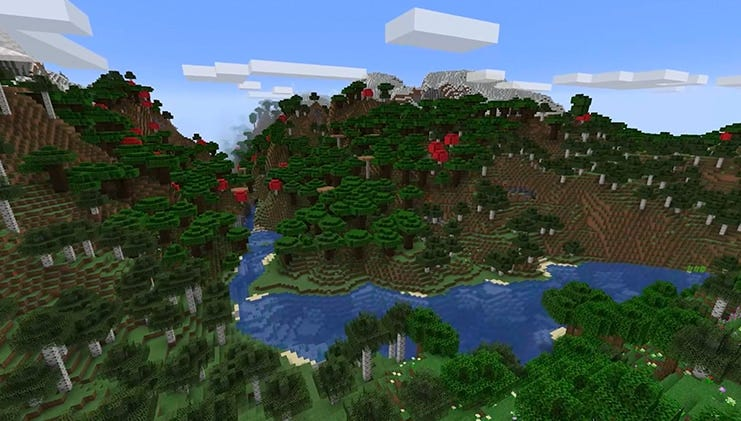

|
|
|
|
|
|
|---|
La génération des mondes dans Minecraft est un élément essentiel du jeu. C'est ce qui rend chaque monde unique et différent. La génération des mondes est basée sur des algorithmes qui déterminent la forme du monde, la répartition des biomes, la répartition des ressources, la répartition des villages, des temples, des donjons, etc.
La génération procédurale est une méthode utilisée dans les jeux vidéo et les applications pour créer du contenu de manière automatique plutôt que de tout concevoir à la main. Cela permet de produire de grandes quantités de contenu varié et unique tout en réduisant la charge de travail des développeurs.
Dans Minecraft, la génération procédurale est responsable de la création des vastes mondes qui rendent le jeu si fascinant. Voici comment elle fonctionne en termes simples :
Minecraft utilise des algorithmes mathématiques pour générer des terrains. Ces algorithmes se basent sur des concepts comme le bruit de Perlin ou le bruit simplex, qui permettent de créer des paysages naturels avec des collines, des montagnes, des lacs, etc. Imaginez cela comme une sorte de peinture aléatoire où chaque "coup de pinceau" est calculé par des formules mathématiques qui produisent des motifs réalistes.
Chaque monde dans Minecraft est généré à partir d'une graine (ou seed en anglais), qui est un nombre. Ce nombre sert de point de départ pour l'algorithme de génération. Si deux joueurs utilisent la même graine, leurs mondes auront exactement la même disposition des biomes et des structures. C’est comme si la graine était le plan de l’architecte qui détermine comment la "nature" va se construire.
Minecraft divise son monde en petites sections appelées chunks, qui mesurent 16x16 blocs de large et s'étendent verticalement sur la hauteur du monde. La génération procédurale se fait chunk par chunk, ce qui permet au jeu de ne pas tout charger en une seule fois, mais seulement les parties proches du joueur. Cela réduit la charge sur l'ordinateur et améliore les performances du jeu.
Certaines structures comme les temples, villages ou forteresses sont générées avec des règles spécifiques. Elles apparaissent selon des schémas qui prennent en compte leur rareté et leur emplacement par rapport aux autres structures.
La génération procédurale permet à chaque joueur d'avoir une expérience unique à chaque nouvelle partie. Cette technologie rend les mondes de Minecraft pratiquement infinis et chaque exploration devient une aventure, car même les créateurs du jeu ne savent pas à quoi ressemblera exactement un monde donné avant de le générer.
En résumé, la génération procédurale, c’est un peu comme avoir une recette de cuisine qui donne des résultats différents à chaque fois qu’on la suit, grâce à des ingrédients aléatoires qui s’agencent selon des règles précises. Cela permet de créer un monde vivant, riche et unique, tout en gardant une cohérence visuelle et fonctionnelle.